2 Instalação R
Nessa Seção, vamos apresentar como instalar o R e o RStudio para os três sistemas operacionais: Windows, MAC e Linux, respectivamente.
2.0.1 Para Windows
Os passos para instalar o R quando o sistema operacional é Windows são os seguintes:
- Entre neste link para acessar a página do R e clique em Download, como no link destacado em retângulo vermelho na Figura @ref(fig:windows1). Note que o 3.6.1 é o número da versão mais recente disponível no momento da construção desse material (5/7/19).
- Salve o arquivo de instalação em algum caminho de interesse do seu computador. Por exemplo, na Figura @ref(fig:windows2) mostra que a pasta é “Downloads”.
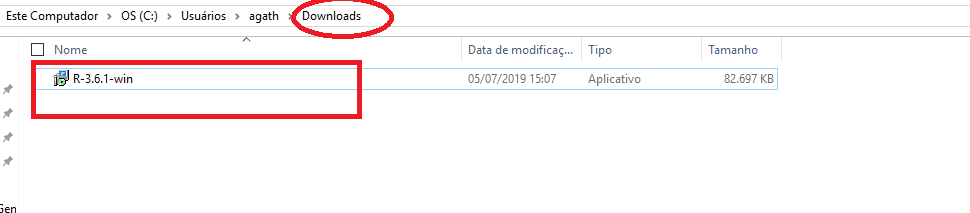
- Clique duas vezes com o botão esquerdo no instalador para iniciar a instalação. O próximo passo é escolher a língua para instalação. Na Figura @ref(fig:windows3) abaixo é português.

- Clique em “Próximo” nas próximas janelas, como nas Figuras @ref(fig:windows4) a @ref(fig:windows9).


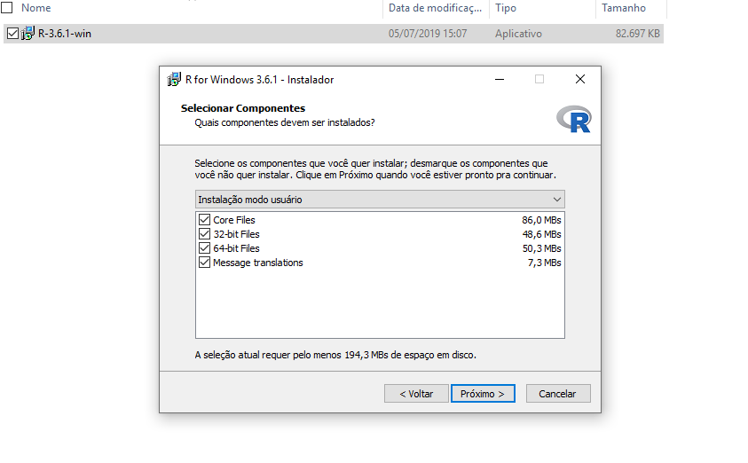


- Pronto, agora o software R será instalado, como na Figura @ref(fig:windows10). Quando terminar, aparecerá uma janela como apresentado na Figura @ref(fig:windows11).
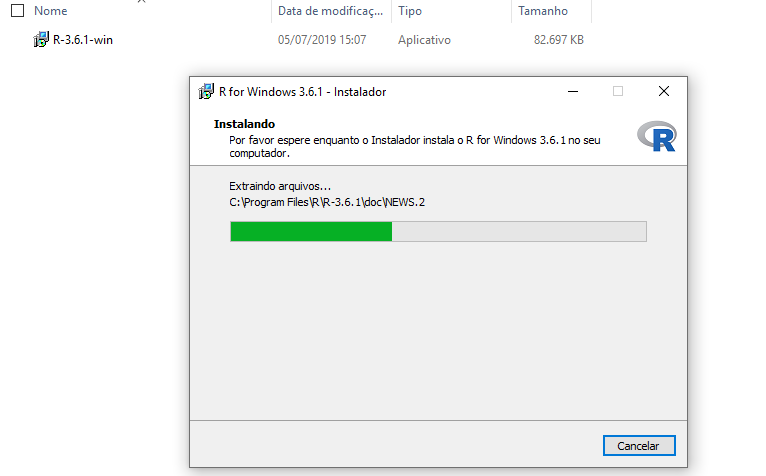
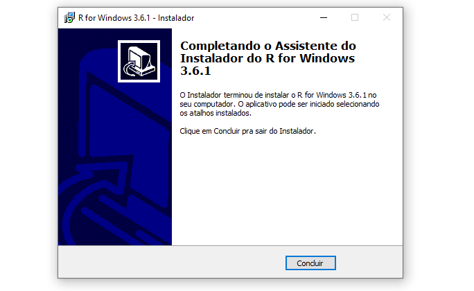
2.0.2 Para MAC
Os passos para instalar o R quando o sistema operacional é OS X (Mac) são os seguintes:
- Entre no site e clique em Download R for (MAC) OS X, conforme destacado abaixo em retângulo vermelho na Figura @ref(fig:mac1).

- Baixe o pacote R-3.6.1.pkg clicando no link indicado no retângulo vermelho na Figura @ref(fig:mac2). Note que o 3.6.1 é o número da versão mais recente disponível no momento da confecção deste material.

- Caso você não tenha configurado a pasta de descargas, o pacote será baixado na pasta “Downloads”, como mostrado na seguinte Figura @ref(fig:mac3). Observe que dois arquivos são baixados, clique duas vezes no arquivo “R-3.6.1.pkg” para abrir o assistente de instalação que o guiará durante o processo.

- Acompanhe os passos indicados pelo instalador (Figura @ref(fig:mac4)).
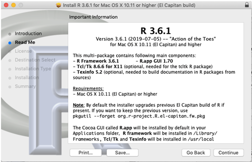
- Deve concordar com os termos da licença, clique em “Agree” (Figura @ref(fig:mac5)).

- Selecione o lugar onde instalará o programa, no caso de ter o disco particionado e assim desejar instalar em uma parte específica. Caso contrário, continue (Figura @ref(fig:mac6) e @ref(fig:mac7)).
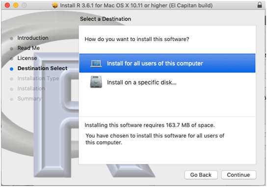
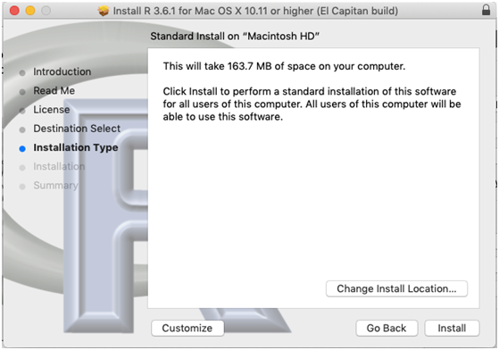
- Para finalizar a instalação, o assistente lhe pedirá nome de usuário e senha do seu notebook, como apresentado na Figura @ref(fig:mac8).
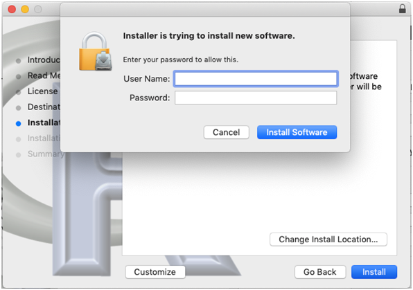
- Pronto, agora o software R será instalado, como na Figura @ref(fig:mac9). Quando terminar, aparecerá uma janela como apresentado na Figura @ref(fig:mac10).

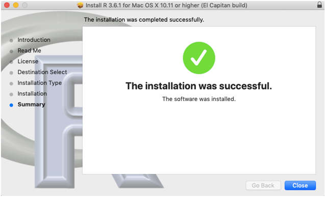
2.0.3 Para Linux
A instalação do R no Linux depende da distribuição utilizada. Entre neste link para acessar a página do R e clique em Download R for Linux, como no link destacado em retângulo vermelho na Figura @ref(fig:linux1). Em seguida, clique no link referente à distribuição utilizada (Figura @ref(fig:linux2)).
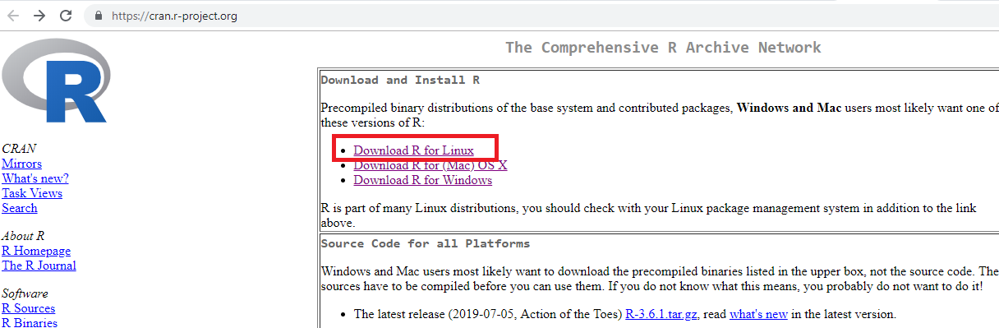
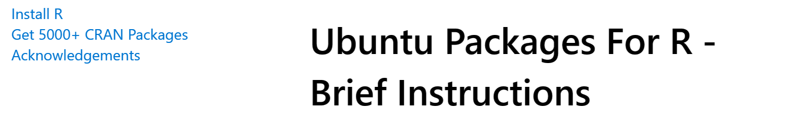